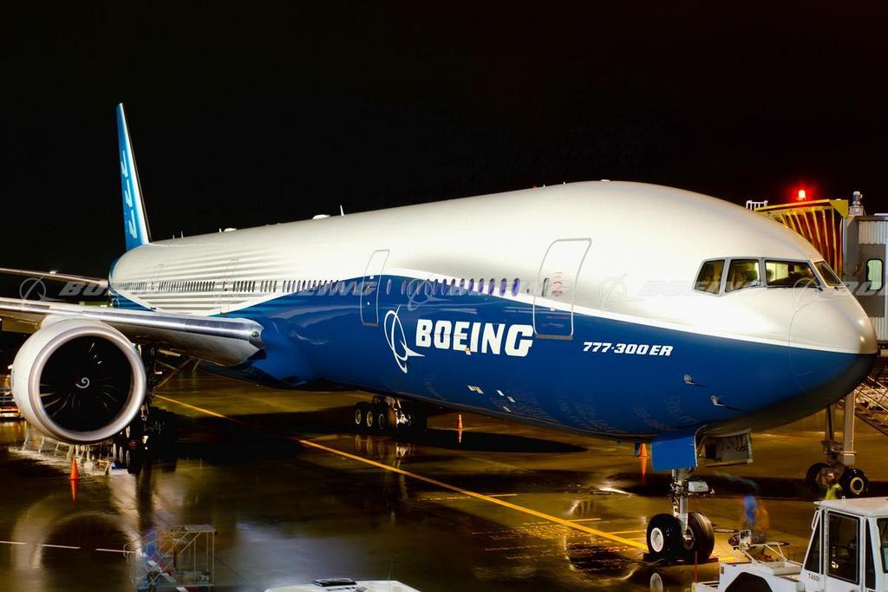

Overview
The Boeing 777-300ER (Extended Range) is the long-range version of the Boeing 777-300. It is widely used by airlines for long-haul international flights, offering a significant increase in range and fuel efficiency compared to earlier aircraft in the 777 family. The 777-300ER can carry up to 396 passengers in a two-class configuration and is known for its spacious cabin and impressive performance capabilities. It is one of the most popular wide-body jets in service today, favored for its ability to cover long distances with fewer fuel stops.
Specifications
| Feature | Details |
|---|---|
| Manufacturer | Boeing |
| First Flight | May 24, 2003 |
| Service Entry | May 17, 2004 |
| Length | 242.4 feet (73.9 meters) |
| Wingspan | 199.9 feet (60.9 meters) |
| Height | 61.5 feet (18.7 meters) |
| Max Takeoff Weight | 775,000 pounds (351,500 kg) |
| Maximum Speed | 905 km/h (561 mph, Mach 0.84) |
| Cruising Speed | 900 km/h (559 mph, Mach 0.84) |
| Range | 13,650 km (8,500 miles) |
| Service Ceiling | 43,000 feet (13,106 meters) |
| Fuel Efficiency | 18% better fuel efficiency compared to the 747-400 |
| Engine Type | GE90-115B engines (General Electric) |
Airlines Using the Boeing 777-300ER
| Airline |
|---|
| Emirates |
| Air India |
| Singapore Airlines |
| British Airways |
| Qatar Airways |
| Cathay Pacific |
| Turkish Airlines |
| Delta Airlines |
| American Airlines |
| Etihad Airways |
Crash History
The Boeing 777-300ER has an excellent safety record with very few incidents reported over its decades of service. Due to its advanced design and engineering, it has been one of the safest wide-body jets in aviation history. The aircraft benefits from the proven success of the Boeing 777 family and incorporates numerous safety features. In recent years, it has seen significant adoption by airlines worldwide, with an extensive operational history. As with any aircraft, safety measures are continuously enhanced to maintain high levels of reliability.